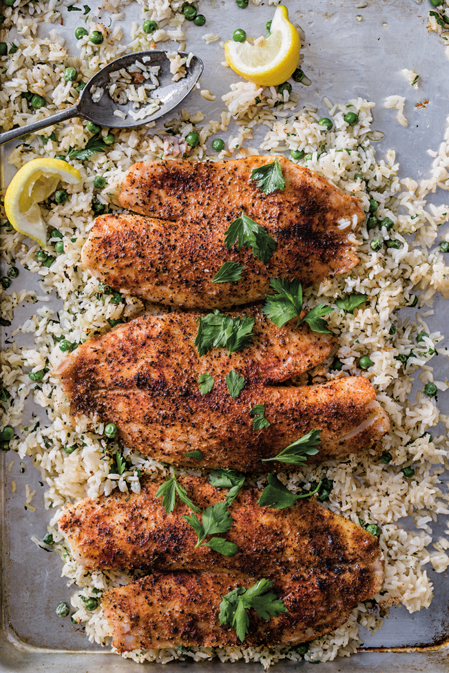
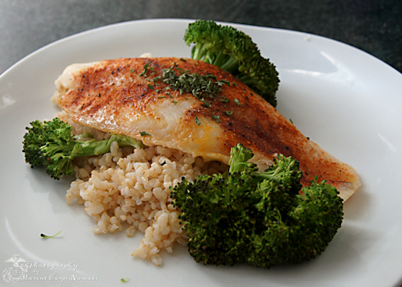

Ingridents
- 1-1/2 cups chicken broth
- 1/2 cup uncooked long grain rice
- 1/4 teaspoon Italian seasoning
- 1/4 teaspoon garlic powder
- 3 cups frozen chopped broccoli,thawed and drained
- 1 tablespoon grated Parmesan cheese
- 1 can (2.8 ounces) french-fried onions, divided
- 1 pound cod
- Dash paprika
- 1/2 cup shredded cheddar cheese

Directions
- In a large saucepan, combine the broth, rice, Italian seasoning and garlic powder, bring to a boil. Transfer to a greased 11x7-in. baking dish. Cover and bake at 375° for 10 minutes. Add the broccoli, Parmesan cheese and half of the onions. Top with fish fillets; sprinkle with paprika.

- Cover and bake 20-25 minutes longer or until the fish flakes easily with a fork. Uncover; sprinkle with cheddar cheese and remaining onions. Return to the oven for 3 minutes or until cheese is melted.
